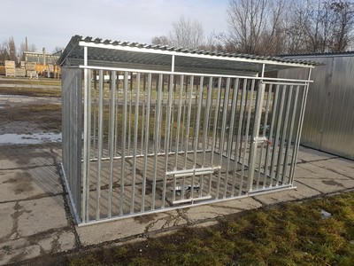
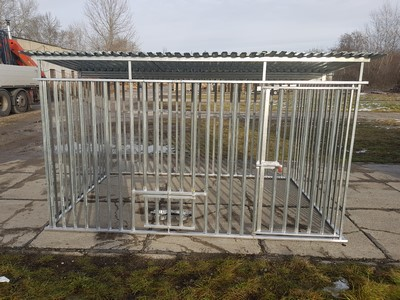
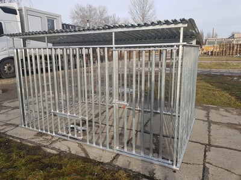
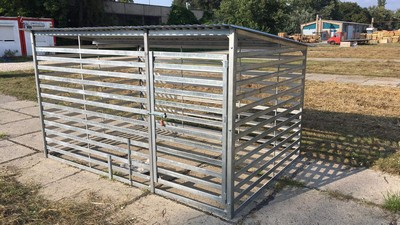
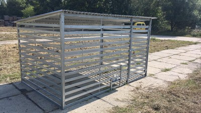

Új kutyakennel, horganyzott acélból, lemez fedéssel
Függőleges rácsozat, hézagtávolság 9cm, ajtó jobb kéz felől.
Forgatható táltartóval, tálakkal.
Három méretben: (könnyebb szerkezetű kennelek)
| Méret | Magasság | Ár | Fa padozat rendelhető hozzá |
|---|---|---|---|
| 2m x 2m * | 171cm elől, 151cm hátul | 125.000 Ft | 25.000 Ft |
| 3m x 2m ** | 171cm elől, 151cm hátul | 140.000 Ft | 30.000 Ft |
| 4m x 2m * | 171cm elől, 151cm hátul | 180.000 Ft | 40.000 Ft |
Szállítási ár: Cím alapján.
Lapra szerelve szállítjuk. Helyszíni összerelés: 8.000,-Ft.
* rendelhető
** rendelhető, de általában van raktáron
 
{kind=link}
{kind=link}
{kind=link}
Új kutyakennel, horganyzott acélból, 50mm x10mm-es profolból, lemez fedéssel
Vízszintes rácsozat, hézagtávolság 10cm, ajtó jobb kéz felől.
Forgatható táltartóval, tálakkal.
Három méretben: (erősebb szerkezetű kennelek)
| Méret | Magasság | Ár | Fa padozat rendelhető hozzá |
|---|---|---|---|
| 2m x 2m * | 171cm elől, 151cm hátul | 145.000 Ft | 25.000 Ft |
| 3m x 2m ** | 171cm elől, 151cm hátul | 160.000 Ft | 30.000 Ft |
| 4m x 2m * | 171cm elől, 151cm hátul | 190.000 Ft | 40.000 Ft |
Szállítási ár: Cím alapján.
Lapra szerelve szállítjuk. Helyszíni összerelés: 8.000,-Ft.
* rendelhető
** rendelhető, de általában van raktáron
 
{kind=link}
{kind=link}
{kind=link}